Todo lo que tiene la app, explicado para alguien que la abre por primera vez: qué hay en cada pestaña, cómo se juega, cómo se arma un grupo, cómo funcionan los torneos, la sala en vivo y la trivia de la iglesia, y qué cambia con cada plan.
«Lámpara es a mis pies tu palabra, y lumbrera a mi camino». Salmo 119:105
Las capturas son de la versión de prueba, con datos de ejemplo (el alias «Juani», el grupo «Jóvenes de la iglesia»). Toca una para verla grande.
Empezar
Qué es y cómo se recorre
Senda es una app para conocer la Biblia leyéndola y jugando. Te acompaña Lany, una oveja que no habla: reacciona con el cuerpo y la mirada (festeja tus aciertos, se agarra la cabeza con tus errores). Abajo hay cinco pestañas; Jugar va en el centro, como una ficha dorada:
No hace falta cuenta ni correo para leer, hacer la Travesía y jugar solo. Lo que lees y tu avance quedan en tu teléfono.
La cuenta aparece recién cuando usas algo con otras personas (amigos, duelos, grupos, torneos, salas): ver Comunidad.
Arriba a la izquierda está tu Lany con tu nivel; al tocarla se abren los Ajustes (idioma, voz, letra, tema, avatar, plan, privacidad).
La app está en español, portugués e inglés (Ajustes → Idioma).
Guardar mi progreso (Ajustes): con tu cuenta de Google se guarda una copia de todo tu avance; si cambias de teléfono o reinstalas, «Recuperar mi progreso» lo trae de vuelta.
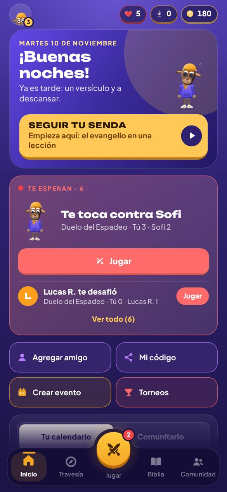
1Inicio: «Seguir tu senda» como lo de hoy, «Te esperan» si alguien te desafió y los atajos (Agregar amigo, Mi código, Crear evento y Torneos).
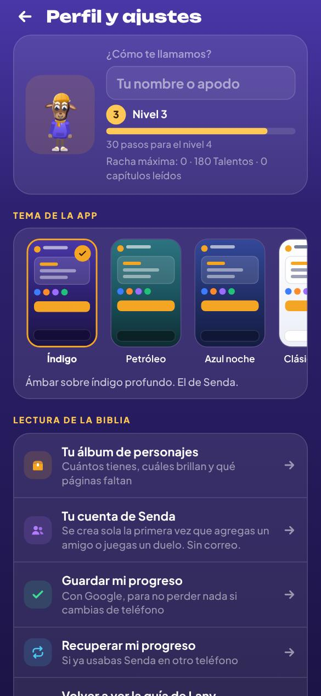
2Tocando tu Lany (arriba a la izquierda) se abre Perfil y ajustes: tu nombre, tu nivel, el tema de la app y más.
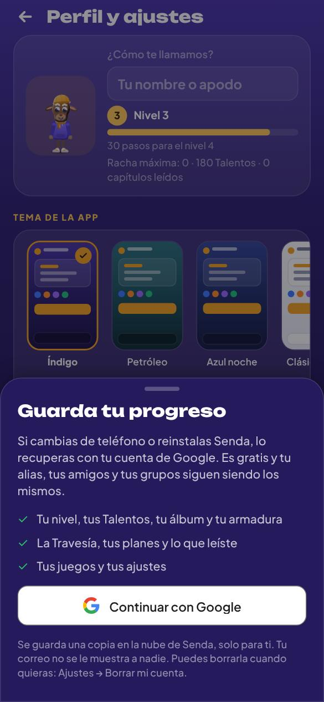
3Ajustes → Guardar mi progreso: qué se guarda (nivel, Talentos, álbum, armadura, Travesía, lo leído, juegos y ajustes) y «Continuar con Google».
Pestaña Inicio
Lo de hoy, a la vista
Tu día
Las tres cosas de hoy (leer, escuchar, una lección). La que falta es el botón grande.
Te esperan
Arriba de todo, si alguien te desafió a un duelo, te invitó a un grupo o a un torneo. Un toque y estás jugando.
Atajos
Agregar amigo, Mi código (para que te agreguen) y Crear evento.
El versículo del día
Un versículo para empezar el día, en la Nueva Biblia Viva.
Los dos calendarios
Tu calendario: lo tuyo. Tus eventos y los torneos en los que juegas (de tu grupo, de amigos o de Senda para todos).
Calendario comunitario: lo de todos. Los eventos de Senda para todos (copas, torneos para todos), los de tus grupos (con «lo creaste» si es tuyo) y la misión de cada lunes.
Cada uno muestra la semana con un punto por día y debajo lo próximo; VER EL MES abre el mes entero. Cada cosa lleva a su lugar: el torneo a Torneos, el evento de un grupo a su grupo.
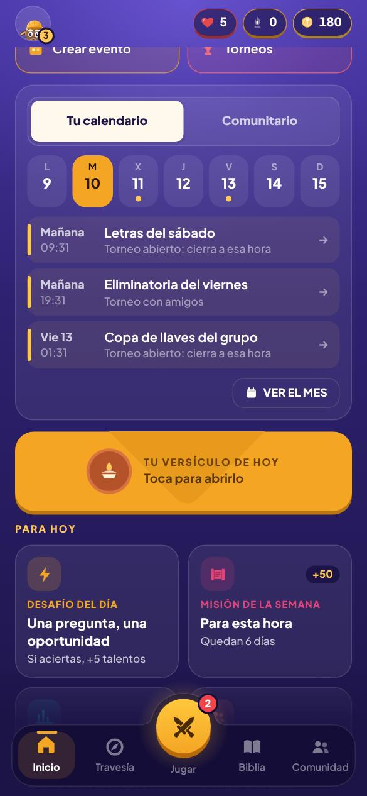
1Tu calendario: la semana (un punto marca los días con algo) y lo próximo tuyo. «Ver el mes» abre el mes entero.
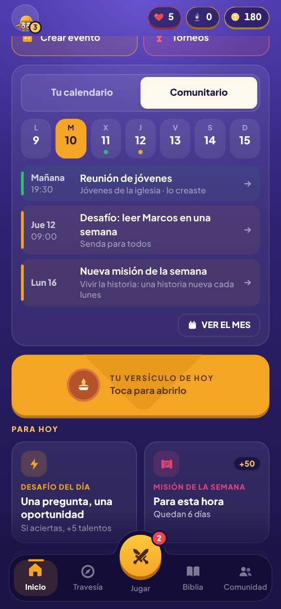
2Comunitario: lo de tus grupos y lo de Senda para todos, con acceso directo a Torneos.
Pestaña Biblia
La Biblia, para leerla de verdad
Abre directo en lo de hoy, sin nada antes de leer. Un solo botón arriba: Planes y versiones.
Se lee deslizando, de arriba abajo. Si escuchas un capítulo, el texto sube solo siguiendo a la voz.
Versiones libres incluidas: Reina-Valera 1909 (con la ortografía de hoy), Nueva Biblia Viva, Palabra de Dios para ti y La Biblia en Español Sencillo. Las que tienen derechos (Reina-Valera 1960, NVI, NTV y otras) se abren en Bible.com, el mismo capítulo, a un toque.
Palabras difíciles subrayadas: un toque y ves qué quieren decir (por ejemplo, «caridad» es amor).
El + de cada versículo abre la hoja de estudio.
La voz que lee: viene una voz masculina, la más parecida al español de México que tenga tu teléfono; se cambia en Ajustes.
Planes de lectura: Salmos en 30 días, Proverbios en 31, los Evangelios en 40, el Nuevo Testamento en 90 y la Biblia en un año. Cada día leído suma a tu racha.
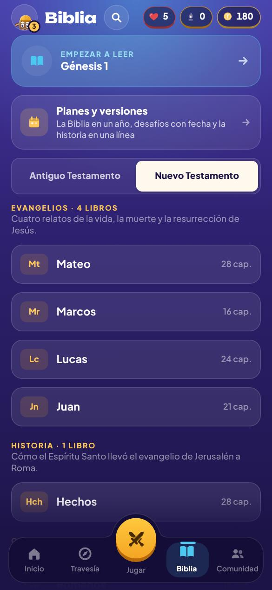
1La pestaña Biblia: empezar o seguir leyendo, «Planes y versiones» y los libros por testamento.
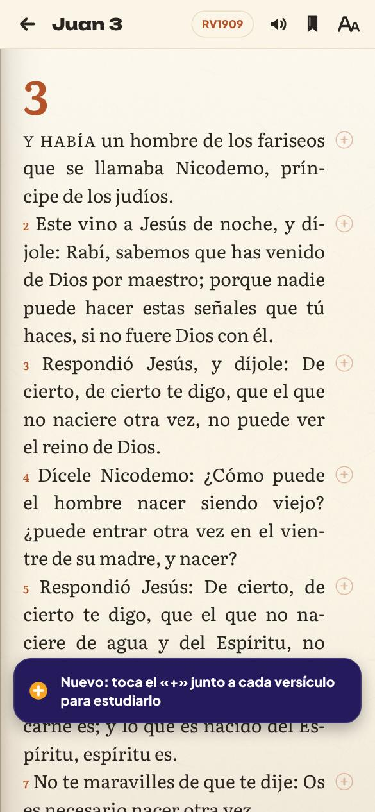
2El lector: arriba la versión (RV1909), el parlante para escucharlo y el + junto a cada versículo para estudiarlo.
Pestaña Travesía
El camino para conocer toda la Biblia
La Travesía está ordenada en 13 áreas (El evangelio, Jesús el Mesías, La Biblia libro por libro, Personajes, Historia de la Iglesia y otras). Cada área tiene rutas, cada ruta tiene capítulos y cada capítulo, puertas en un camino iluminado. El ícono del mapa, arriba, abre la Travesía completa para elegir otra ruta.
La lección
Primero se muestra: quién es el personaje (su ficha), qué pasó antes, la historia y qué leer. Después, seis o siete preguntas en el orden del relato, y un resumen.
Cofres y jefes
Un cofre es una sorpresa en el camino; el jefe, al final de cada capítulo, repasa todo el capítulo.
Lámparas
Tres por lección. Cada una abre el pasaje donde está la respuesta, sin salir de la lección. Si se acaban, otra cuesta 10 Talentos.
Vidas
Cinco. Se pierde una al errar; vuelve una cada 30 minutos, otra por cada capítulo leído (hasta 3 por día) y otra por mirar un video con premio.
Nuevo: Historias bíblicas. Una ruta con las grandes historias, escena por escena, donde cada zona tiene su paisaje: al bajar, el fondo pasa de Egipto a las plagas, al mar abierto, a las tiendas del desierto y al Sinaí. La primera historia abierta es Moisés y el éxodo (13 lecciones); el plan llega hasta Pablo y el naufragio.
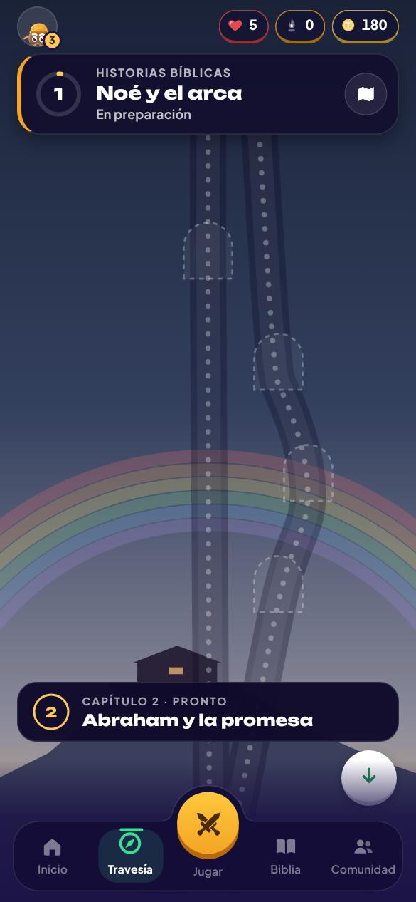
1El camino de «Historias bíblicas»: arriba el capítulo en el que estás y, de fondo, su paisaje (acá, Egipto), que cambia al bajar. La puerta abierta dice ENTRAR.
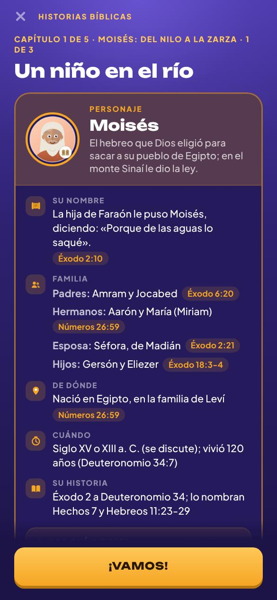
2Antes de preguntar, la ficha del personaje: su nombre, su familia, de dónde es y cuándo vivió, cada dato con su cita.
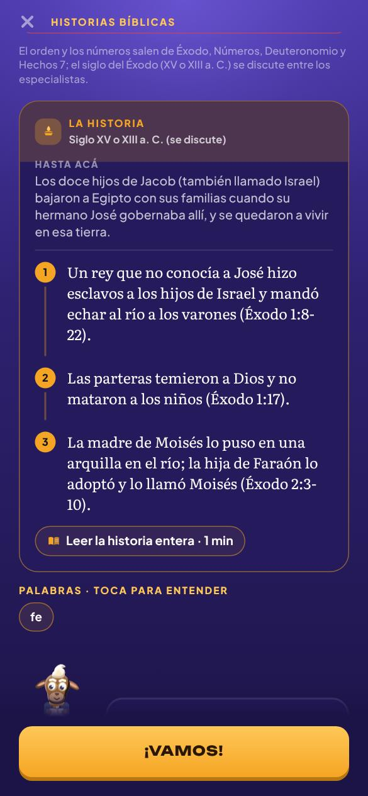
3Después, lo que pasó antes y la historia en pocos puntos; «Leer la historia entera» la abre completa.
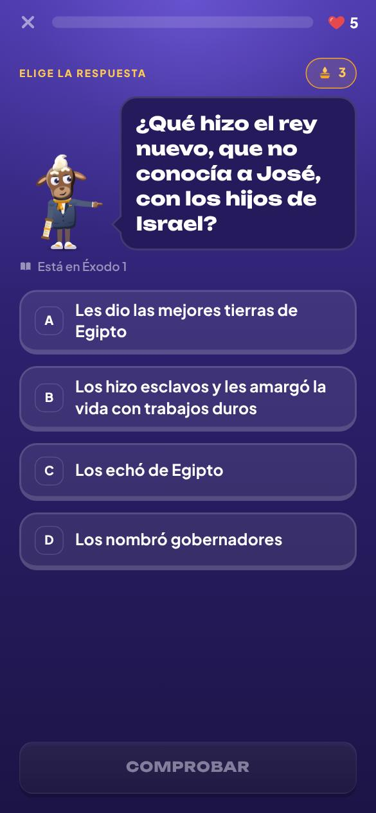
4Las preguntas siguen el orden del relato. Debajo de la pregunta dice dónde está la respuesta (Éxodo 1).
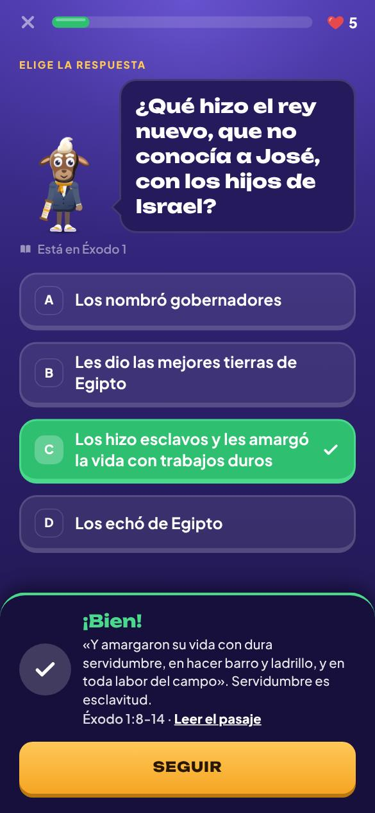
5Al comprobar: la explicación con el versículo y «Leer el pasaje».
Pestaña Jugar
Los juegos
El Espadeo, la trivia principal
Giras la ruleta (también se agarra con el dedo) y sale una categoría. Cada categoría es una pieza de la armadura de Dios (Efesios 6):
Pieza
Lo que pregunta
Botas
El evangelio: la vida de Jesús y cómo se anunció
Casco
La salvación: la historia de la salvación
Escudo
La fe: los personajes
Cinturón
La verdad
Coraza
La vida
Espada
La Palabra
Tres aciertos llenan la Carga; ahí viene la prueba de la pieza y, si la pasas, la pieza vuela a tu armadura. Con las seis, Lany aparece con la armadura completa. Cada acierto vale de 500 a 1.000 puntos según lo rápido que contestes. Se juega solo, contra Lany, o en duelos por turnos contra un amigo o un rival al azar (cada uno juega hasta fallar).
Más juegos
¿Quién es?
Lany elige un personaje en secreto; le preguntas lo que quieras, escrito a tu manera (hay más de 260 preguntas y Lany entiende cuál es). Contra Lany tienes un tope: con 12 personajes, 6 preguntas. También contra otra persona.
Nombres por letra
Sale una letra y hay que decir nombres de la Biblia que empiecen con ella. Se dicen en voz alta y el teléfono los suma solo (si no entiende uno, «+1»). Todos juntos o por equipos (2 a 6, cada uno con su nombre); contra Lany o un amigo, escribiendo o con el micrófono.
Antes o después
Arrastras cada carta a su lugar en la historia de la Biblia, de la creación a Patmos (317 hechos). Por niveles (15 épocas, cada una con su dibujo), juego libre, «juega y pasa» con un solo teléfono o contra un amigo.
Vivir la historia
La misión de la semana: una historia nueva cada lunes, paso a paso, y al final ves lo que pasó y por qué.
En la frente
Para jugar en grupo: el teléfono en la frente y el grupo contesta sí o no.
Álbum de personajes
Abres sobres con Talentos y vas pegando a los personajes de la Biblia, cada uno con su ficha. Nunca salen repetidas.
1La pestaña Jugar: el Espadeo arriba, la misión de la semana y los juegos para aprender.
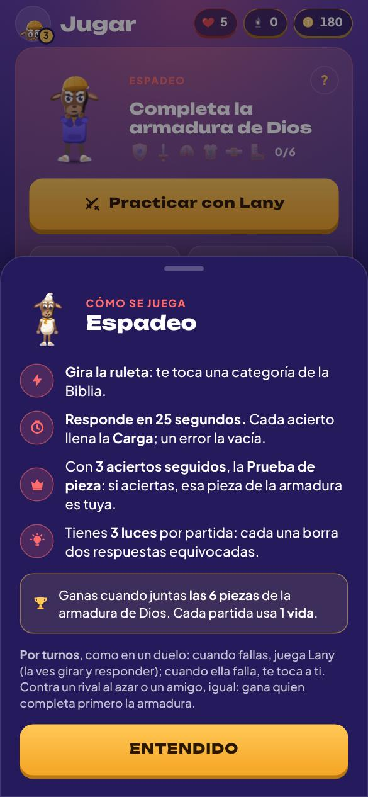
2La primera vez, cada juego explica en una hoja cómo se juega (y queda a mano en «?»).
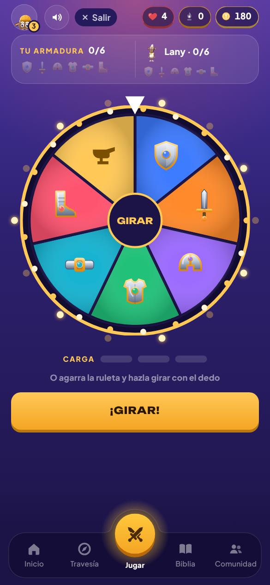
3El Espadeo: tu armadura y la de Lany arriba; la ruleta se toca o se gira con el dedo.
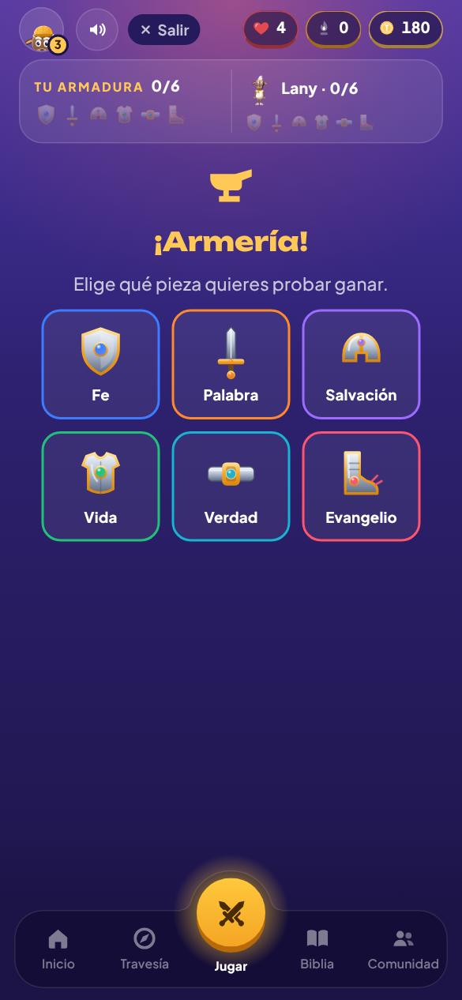
4Sale una pieza (acá, el Cinturón: la verdad) y su pregunta, con el tiempo que corre.
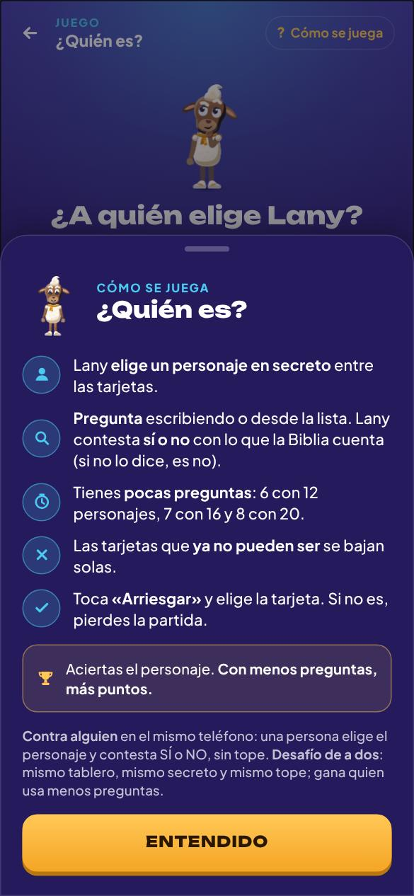
5¿Quién es?: Lany elige un personaje en secreto y tú preguntas hasta descubrirlo. También se juega contra alguien.
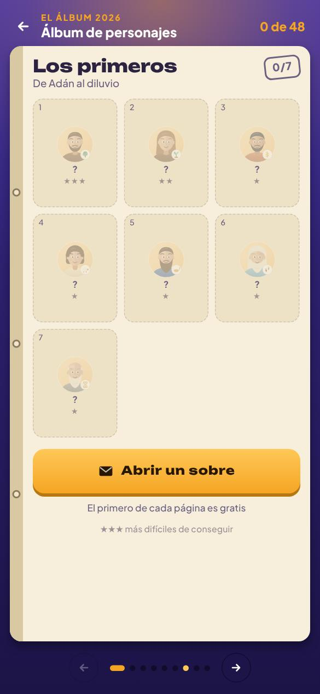
6El álbum de personajes: «Abrir un sobre» con Talentos; el primero de cada página es gratis.
Talentos, pasos y nivel
Lo que vas juntando
Talentos (se gastan)
Se ganan con las misiones del día, las lecciones, los repasos, los juegos y la misión de la semana. Se usan en sobres del álbum (40; el primero de cada página es gratis), en el protector de racha (50) y en una lámpara más (10). Nunca se venden.
Pasos y nivel (no bajan)
Cada capítulo, lección, juego y misión suma pasos, y los pasos suben tu nivel. El nivel mide lo que caminaste en la app, no tu fe.
Racha
Los días seguidos con lectura. El protector la cuida si un día se te pasa.
Pestaña Comunidad
Jugar con otros: la cuenta
La primera vez que tocas algo con otras personas (agregar un amigo, un duelo, un grupo), Senda te muestra las Normas de la comunidad: respeto, nada ofensivo, no hacerse pasar por otro, no escribir datos personales y denunciar lo que no está bien.
Tocas ACEPTO y se crea tu cuenta. No pide correo ni contraseña: es una cuenta anónima, ligada a tu teléfono.
Eliges tu alias. Es único en todo Senda: nadie más puede tener el mismo, ni uno que imite a Senda o a otra persona.
Diseñas tu avatar (Ajustes → Diseñar mi avatar, o tocando tu foto en tu perfil): de frente, como una foto de perfil; eliges peinado, color de pelo, cara, piel, ropa, lentes y barba (o «Al azar») y tocas Guardar mi avatar.
Amigos: con tu código o buscando el alias (desde 3 letras); el otro acepta. Puedes dejar de aparecer en la búsqueda.
Tu perfil público muestra logros de juego (álbum, armaduras, duelos ganados, copas), nunca lo que lees. Se puede ocultar.
Comunidad tiene dos tarjetas: Amigos (abajo, «Agregar amigo» y «Mi código») y Grupos (abajo, «Crear grupo» y «Unirme a un grupo»). Tocar el título abre la lista entera. Más abajo, el calendario comunitario y la encuesta del día.
Para menores de 13, amigos, grupos y salas están apagados: pueden leer y jugar solos.
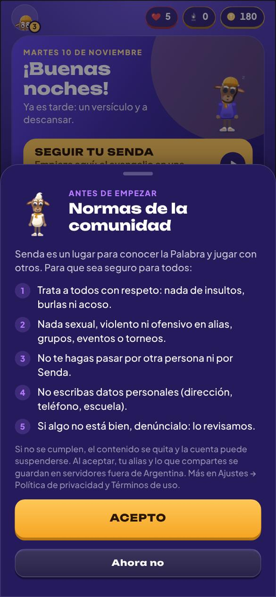
1Antes de crear la cuenta: las normas de la comunidad. Con «Acepto» se crea tu cuenta, sin correo.
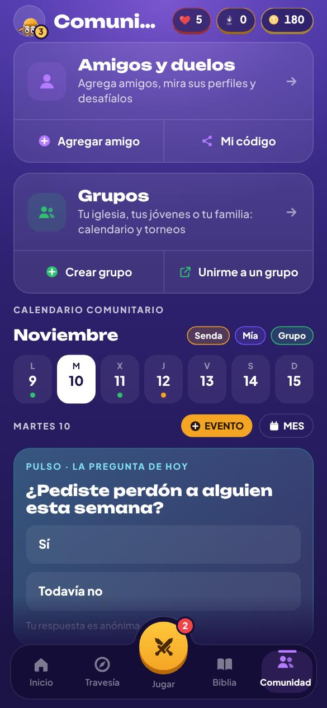
2La pestaña Comunidad: dos tarjetas, Amigos y Grupos, cada una con sus dos acciones abajo.
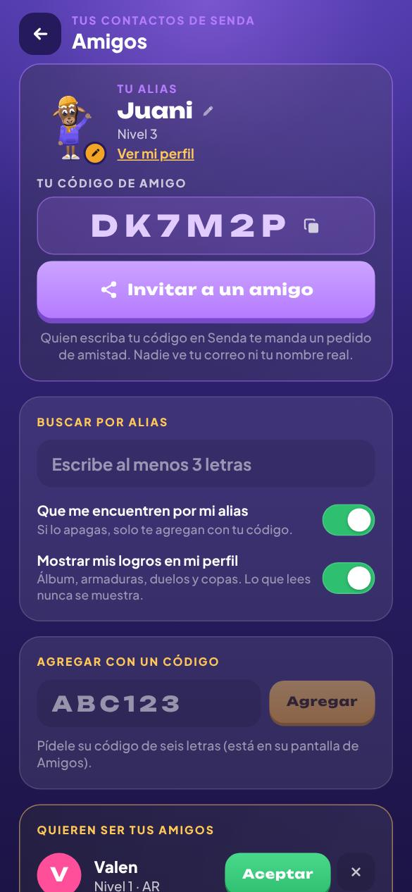
3Amigos: tu alias, tu código para que te agreguen, la búsqueda por alias y los pedidos que te llegan.
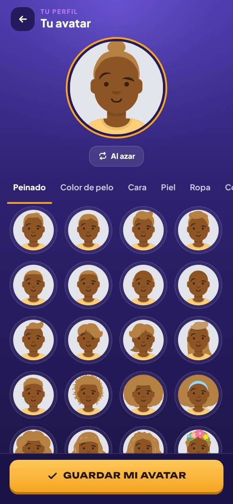
4Tu avatar, de frente como una foto de perfil: eliges cada parte viendo cómo queda, o «Al azar», y tocas Guardar.
Grupos
La iglesia, los jóvenes o la familia
¿Hace falta un grupo? No. Todo se puede usar sin grupo. El grupo sirve para jugar con tu iglesia: su calendario, sus torneos y la trivia del sermón.
Crear uno (así lo hace el líder)
Comunidad → Grupos → Crear un grupo. Escribes el nombre, eliges qué es (iglesia, jóvenes, célula, familia u otro) y tocas Crear. Quedas como líder.
El grupo tiene un código de 8 letras (los grupos más viejos, de 6). Invitar al grupo lo manda por WhatsApp o donde quieras; Invitar amigos elige a tus amigos de Senda y a ellos les llega la invitación en Inicio.
Desde la página del grupo armas el calendario (Evento), los torneos (Torneo) y, con Max, la trivia del sermón.
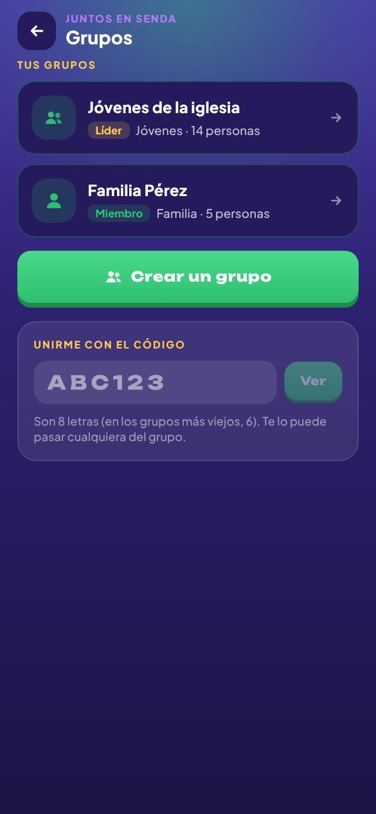
1Comunidad → Grupos: tus grupos con tu rol en cada uno, «Crear un grupo» y «Unirme con el código».
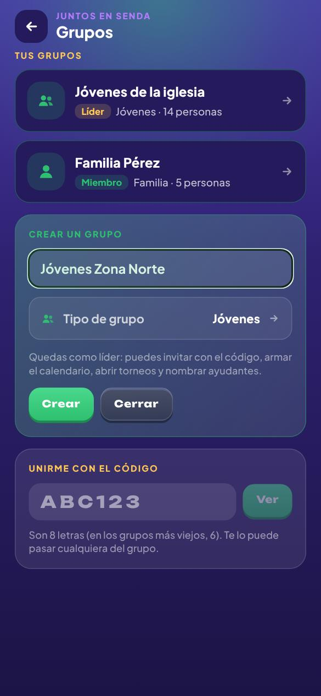
2Crear un grupo: el nombre y qué es. Al tocar Crear quedas como líder.
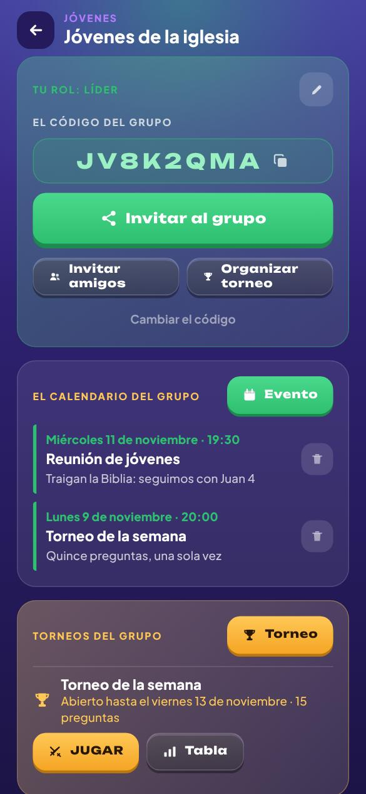
3La página del grupo, vista por el líder: el código (se copia con un toque), «Invitar al grupo», «Invitar amigos» y «Organizar torneo».
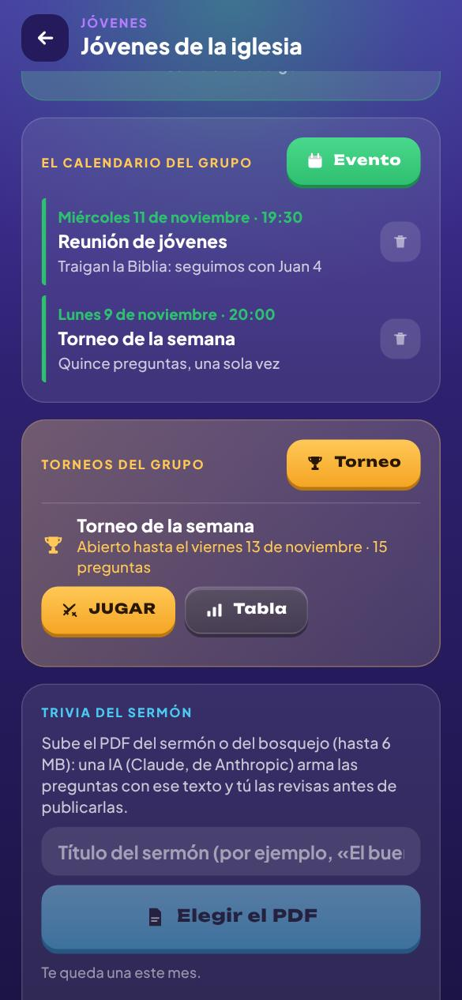
4El calendario del grupo y sus torneos: lo que arma el líder aparece en el calendario de todos, con su aviso.
Entrar a uno
Comunidad → Unirme a un grupo, escribes el código y tocas Ver: aparece el grupo con su nombre y quién lo lidera. Tocas Unirme.
O aceptas la invitación que te llegó en Inicio («Te esperan»).
Quien entra queda como miembro. Cualquier miembro puede invitar a sus amigos.
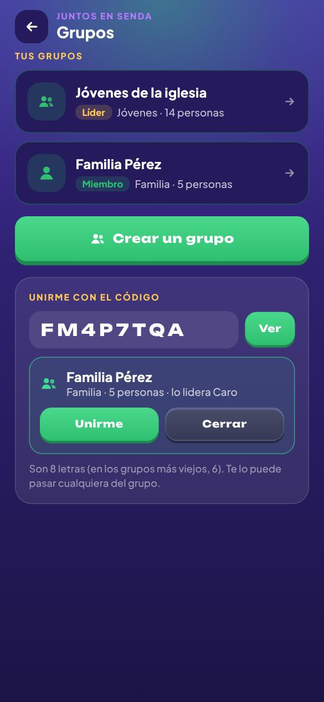
1Unirme con el código: antes de entrar ves qué grupo es y quién lo lidera.
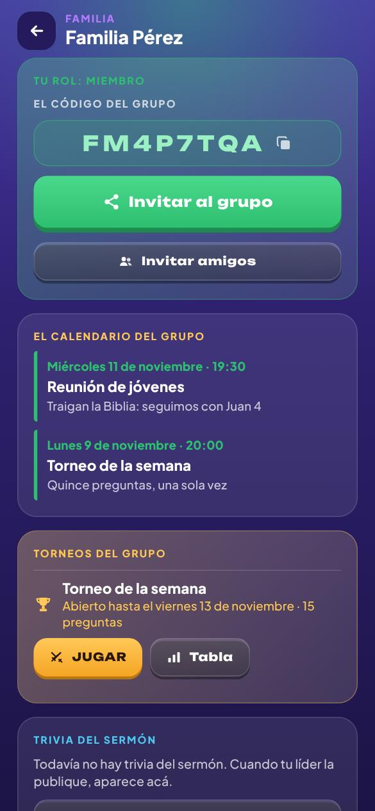
2Lo que ve un miembro: el código, «Invitar al grupo», «Invitar amigos», el calendario y los torneos.
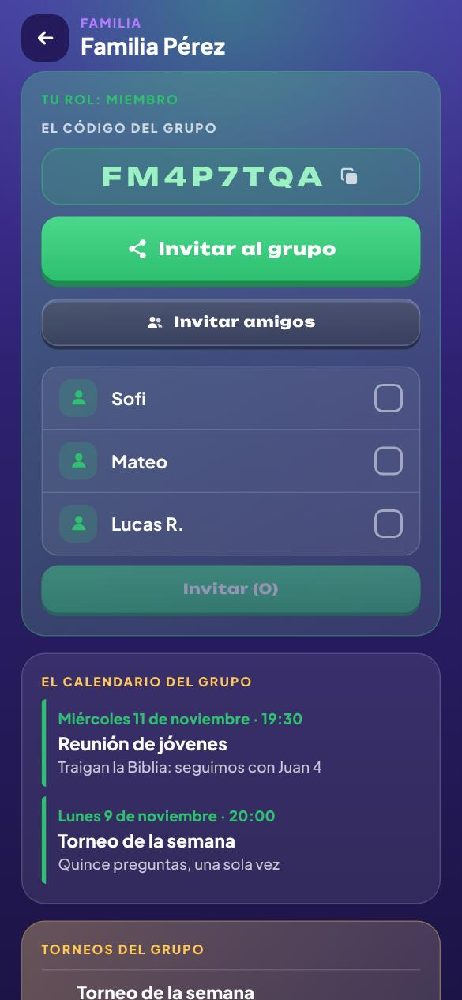
3«Invitar amigos»: tocas a tus amigos que todavía no están y les mandas la invitación.
Los roles
Líder
Quien crea el grupo, o a quien se lo pasan.
Todo: cambia roles, escribe el rol de cada uno, pasa el liderazgo, arma el calendario y los torneos, publica la trivia del sermón (con Max), cambia el código y saca a quien haga falta.
Ayudante
Lo nombra el líder.
Arma el calendario y los torneos y puede sacar a un miembro.
Miembro
Todo el que entra.
Ve el calendario, juega los torneos y la trivia, e invita a sus amigos.
Además, cada persona puede tener un rol escrito, lo que hace en el grupo («Guitarra», «Sonido», «Pastor de jóvenes»). Lo escribe el líder, también el suyo.
Dar roles y pasar el liderazgo (el líder)
En Miembros, toca a alguien. Escribe su rol (por ejemplo, «Sonido») y toca Guardar.
Debajo eliges: Pasarle el liderazgo, También líder (quedan los dos como líderes), Hacer ayudante o Hacer miembro. También están Perfil y Sacar del grupo.
Pasarle el liderazgo pide confirmación. Al confirmar, el otro queda como líder (le llega un aviso) y tú, como ayudante.
Para escribir tu propio rol, toca tu nombre en la lista.
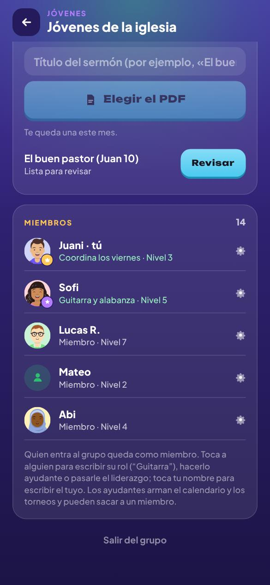
1Miembros: cada uno con su rol escrito y su nivel; la corona marca al líder y la estrella, al ayudante.
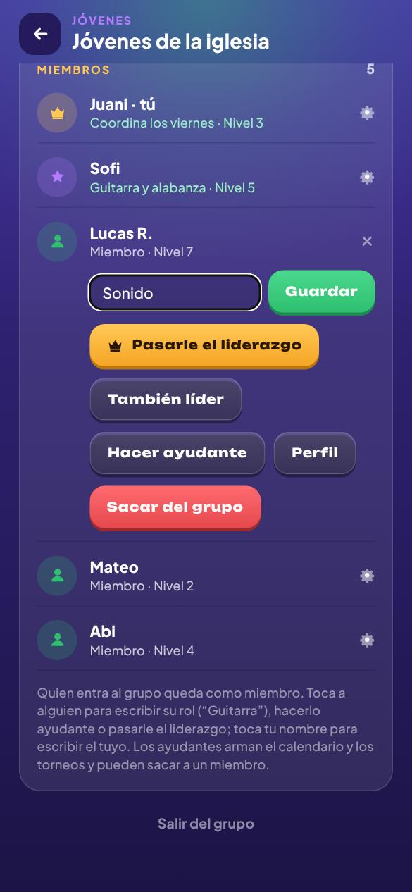
2Al tocar a alguien: su rol escrito y lo que puedes hacer con él.
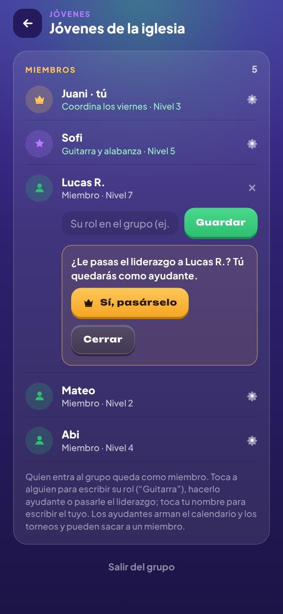
3Pasar el liderazgo: pide confirmación y tú quedas como ayudante.
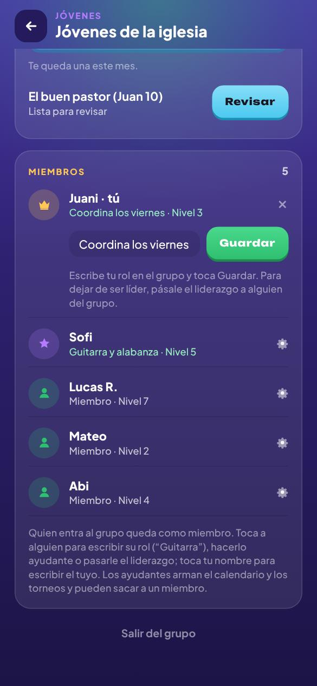
4Tocando tu nombre escribes tu propio rol en el grupo.
Topes: hasta 10.000 personas por grupo (la lista se ve de a 100, con «Ver más» y un buscador por alias), 30 grupos por persona y 5 como líder. En un grupo puede haber gente que no es tu amiga.
Trivia de la iglesia
Lo del domingo, repasado en la semana
El líder sube el sermón o el bosquejo en PDF y Senda arma una trivia con ese texto. Cada pregunta dice en qué punto del material está la respuesta.
El líder (plan Max)
Entra a la página del grupo y elige el PDF (hasta 6 MB).
Una IA (Claude, de Anthropic) escribe las preguntas con ese texto.
El líder las revisa: saca con un toque las que no le gustan. Nada llega al grupo sin esa revisión, y la arma siempre un mayor de 18.
Publicar para el grupo, o Programar para el grupo con día y hora: el grupo recibe el aviso y, cuando abre, cada uno responde por puntaje (tres horas para entrar).
Los del grupo
La juegan desde Jugar → Trivia de la iglesia: solos, contra Lany, varios en el mismo teléfono (cada uno su turno) o todos juntos en una sala en vivo o un torneo del grupo. Antes de jugar se puede leer el material completo.
Max incluye 8 por mes; en los otros planes hay 1 de prueba.
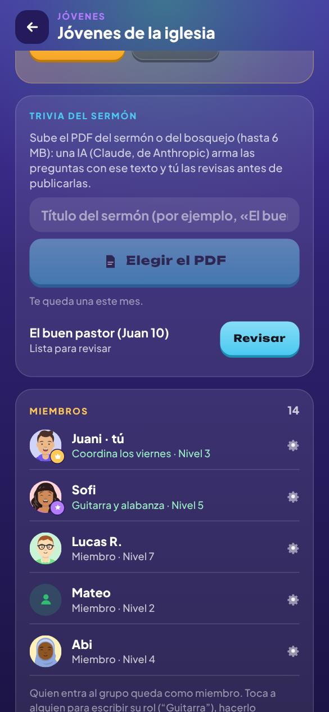
1En la página del grupo, el líder escribe el título del sermón y toca «Elegir el PDF».
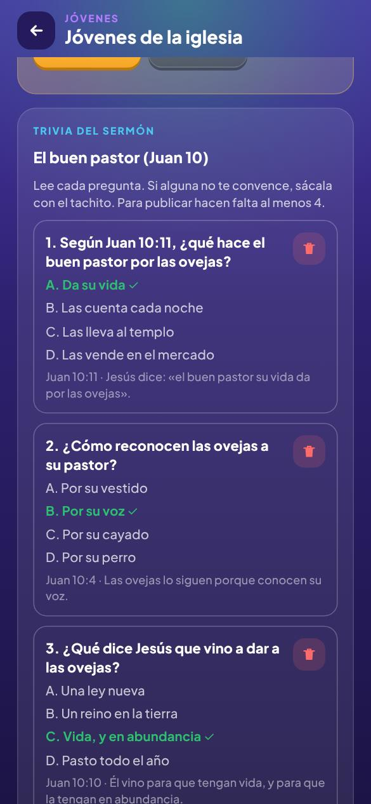
2Revisar: cada pregunta con su respuesta y dónde está en el material; el tachito saca las que no van. Al final, «Publicar para el grupo» o «Programar para el grupo».
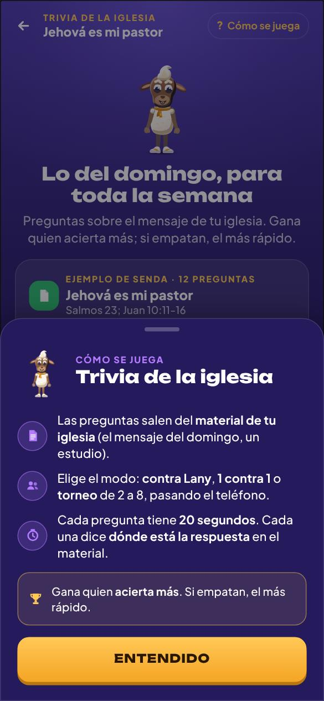
3Jugar → Trivia de la iglesia: la primera vez explica cómo se juega.
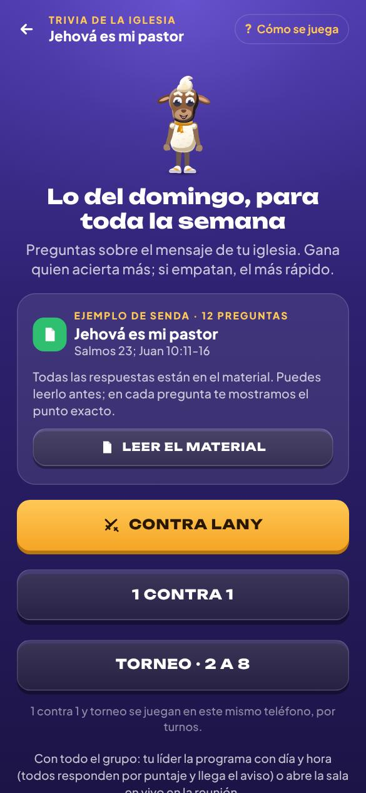
4Se puede leer el material antes y elegir: contra Lany, 1 contra 1 o torneo de 2 a 8 en el mismo teléfono.
Sala en vivo
El concurso de la reunión
Todos responden la misma pregunta al mismo tiempo, cada uno en su teléfono, y la pantalla grande muestra el código y la pregunta para leerla desde lejos.
Quien la abre (el anfitrión)
Jugar → Torneos → Crear uno → En vivo, o en la sala → Crear una → Abrir una sala nueva (10 preguntas del Espadeo). Para jugar la trivia del sermón, se abre desde la página del grupo.
Aparece un código grande. Lo muestras en el proyector o lo compartes.
Cuando llegaron todos, manejas el ritmo: empezar, ver la respuesta, la que sigue y, al final, el podio.
Los que juegan
Jugar → Torneos → Sumarme a uno → escriben el código de 6 letras (o tocan el enlace que les mandaste) → en la sala, su alias → Entrar. Dos personas no pueden tener el mismo alias en una sala.
Responden en su teléfono; la base corrige y suma los puntos.
Capacidad: hasta 10 personas en Gratis y Premium; hasta 500 con Max.
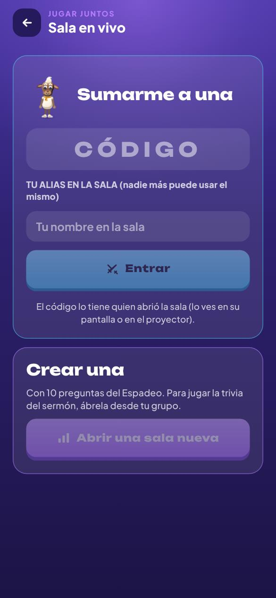
1La sala en vivo: «Sumarme a una» (el código y tu alias, que nadie más en la sala puede tener) y «Crear una».
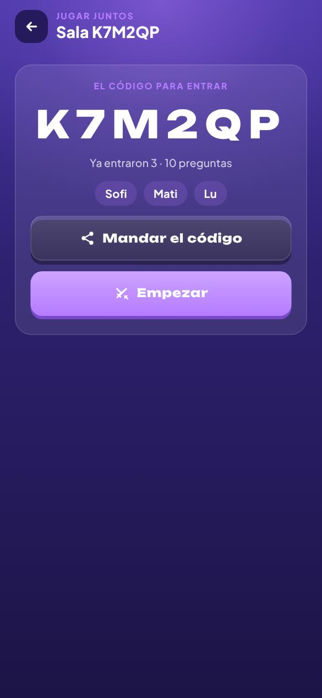
2El anfitrión ve el código grande (para el proyector), quiénes llegaron y «Mandar el código». Cuando están todos, «Empezar».
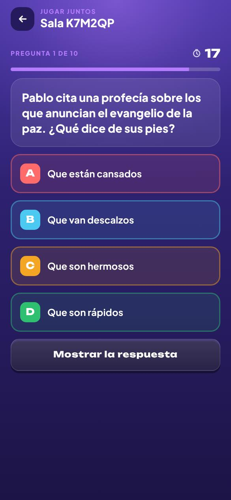
3Todos responden la misma pregunta a la vez; el anfitrión toca «Mostrar la respuesta» y sigue.
Torneos
Competir durante unas horas o unos días
Jugar → Torneos. Arriba, grandes, las dos cosas que se hacen ahí: Sumarme a uno (escribes el código que te pasaron: 8 letras para un torneo, 6 para una sala en vivo; si te llegó un enlace, lo tocas y entras directo) y Crear uno. Abajo están todos los tuyos: Próximos (con su día y hora, también los de Senda a los que te anotaste), Abiertos y Terminados.
Un torneo se juega de dos formas. Todos contra todos: cada uno juega cuando puede hasta que vence, todos las mismas preguntas, y al final hay una tabla. Eliminatoria: cruces de a dos, un día por fase; el que pierde queda afuera y el cuadro se ve en la tarjeta. Según con quién se juega, hay cuatro clases:
Con amigos
Lo arma cualquiera e invita a los amigos que quiera.
Con un grupo
Lo arma el líder o un ayudante para todo el grupo.
Con un enlace
Lo arma cualquiera y lo manda por WhatsApp: todos los que entran con el enlace juegan hasta la fecha tope. Es el desafío del sermón sin armar un grupo.
Senda para todos
Lo lanza el administrador de Senda y cualquiera se anota.
Organizar uno (con amigos o con tu grupo)
¿Qué juegan? Trivia, Nombres por letra, ¿Quién es? o En vivo (la sala de la reunión, con Max).
¿Cómo se juega? Todos contra todos o eliminatoria. En la eliminatoria se suma gente hasta el día de arranque; ese día se arma el cuadro y cada día es una fase: el que no juega su cruce pierde y, si no juega ninguno, pasa uno al azar. La final puede ir en un día que elijas.
¿Con quién? Tus amigos (uno por uno), tu grupo entero o con un enlace (al crearlo se abre para compartir; después, desde la lista, «Compartir el enlace» o «Copiar el código»). Quien abre el enlace ve qué torneo es y toca SUMARME.
¿De qué son las preguntas? Las de Senda (todos reciben las mismas), las tuyas (las escribes ahí) o la trivia de un sermón de un grupo que lideras (también con enlace, para que la juegue cualquiera).
¿Cuándo vence? Eliges cuánto dura (en la eliminatoria, el día de arranque). Con enlace puedes poner, además, hasta cuándo se puede sumar gente. Los invitados lo ven en Inicio, en «Te esperan», y les llega un aviso.
Lanzar un torneo para todo Senda (administrador)
Esta opción solo aparece en una cuenta marcada como administrador.
Toca tu Lany (arriba a la izquierda) → Ajustes → Senda para todos.
En Torneo para todos: el nombre (por ejemplo, «Gran torneo de Navidad»), el juego, el día en que empieza, la hora y cuánto dura (1 hora, 3 horas, 1 día, 3 días o 7 días; hasta 14 días como máximo). Opcional: un detalle para el calendario.
LANZAR PARA TODOS.
Qué pasa después. El torneo aparece en el Calendario comunitario de todas las personas y en Jugar → Torneos con el botón ANOTARME. Quien se anota lo tiene en su calendario y le llega un aviso al teléfono cuando empieza. Se juega dentro del horario que elegiste y después queda la tabla. A los que no se anotaron no se les manda aviso, para no molestar: para difundirlo fuera de la app, compártelo en las redes y grupos de la iglesia.
Desde la misma pantalla de administrador también se publican un evento para todos (aparece en el calendario de todos) y la encuesta del día, y se revisan las denuncias.
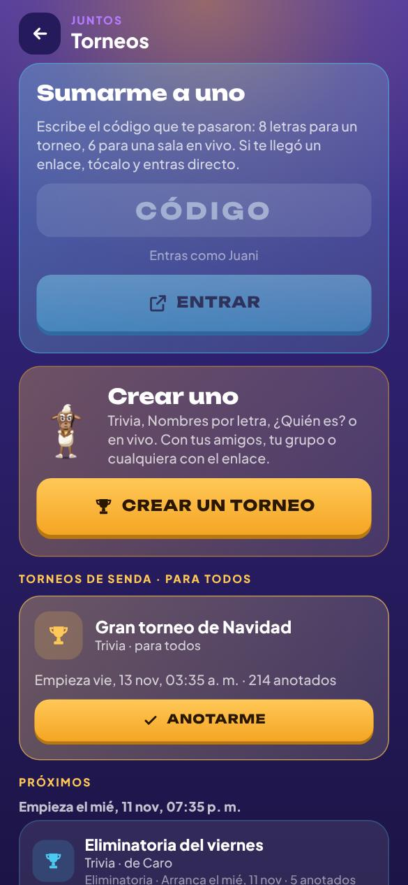
1Jugar → Torneos: arriba «Sumarme a uno» (con el código) y «Crear uno»; abajo, los de Senda para todos y los tuyos.
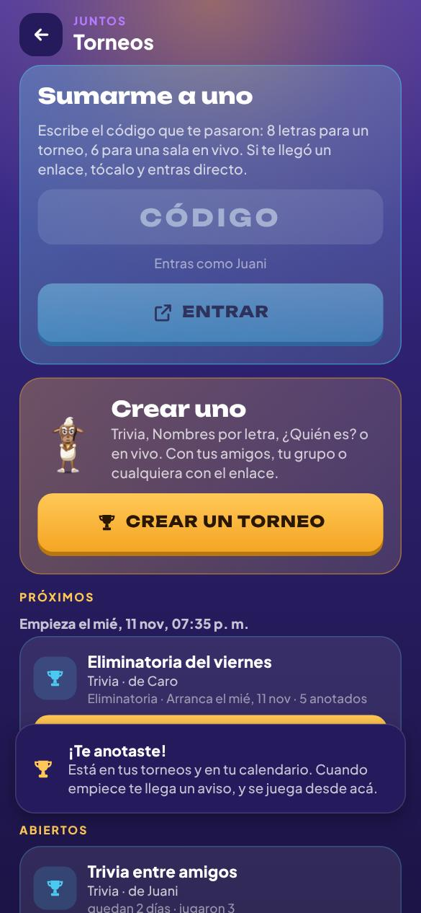
2Al anotarte: queda en tus torneos y en tu calendario, y te llega un aviso cuando empieza.
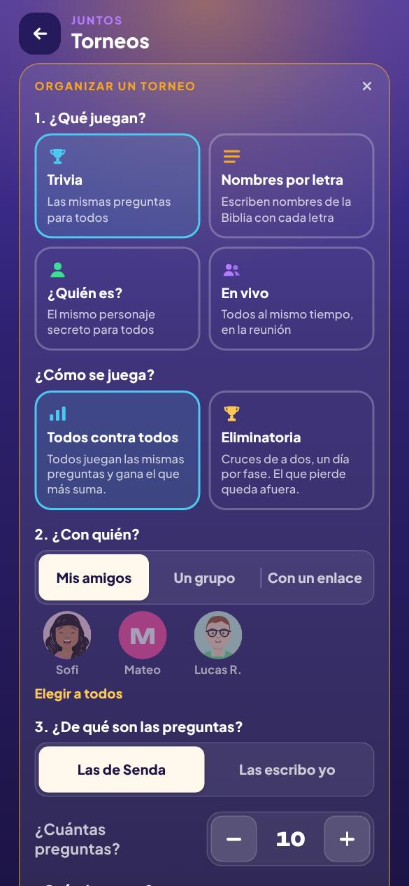
3Organizar un torneo: qué juegan (Trivia, Nombres por letra, ¿Quién es? o En vivo) y cómo se juega (todos contra todos o eliminatoria).
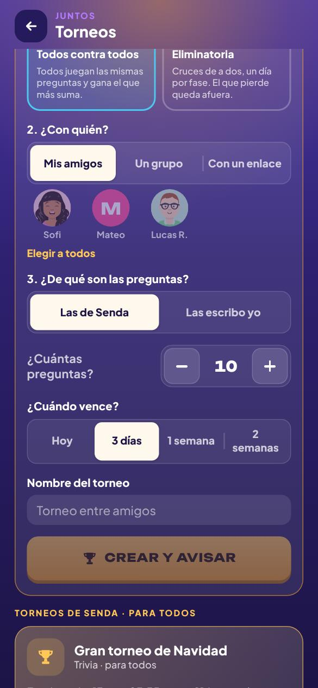
4Después: con quién (tus amigos, un grupo o un enlace), de qué son las preguntas, cuántas, cuándo vence y el nombre. Al final, «Crear y avisar».
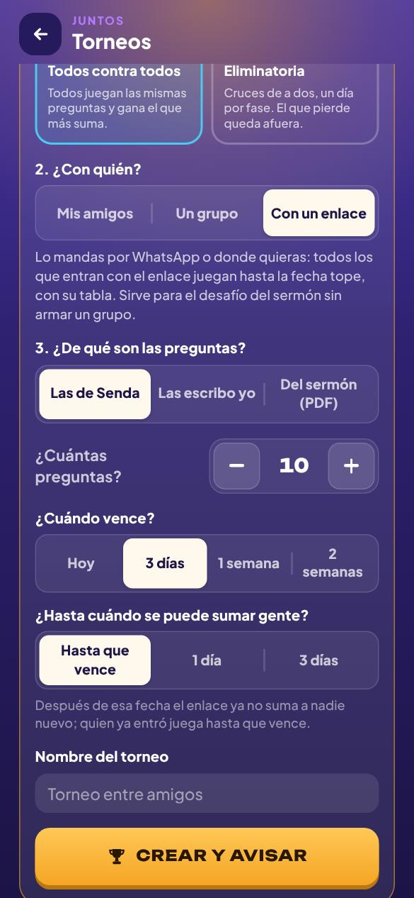
5«Con un enlace»: lo mandas por WhatsApp y todos los que entran juegan hasta la fecha tope, con su tabla. Sirve para el desafío del sermón sin armar un grupo.
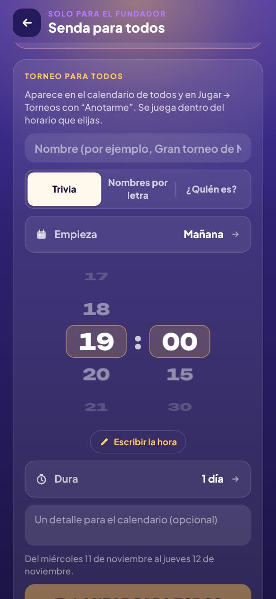
6Administrador: Ajustes → Senda para todos → Torneo para todos. Nombre, juego, día, hora y cuánto dura; abajo, «Lanzar para todos».
Planes
Qué cambia con cada plan
Todo lo que enseña es gratis para siempre. Nada pago da ventaja: los puntos, las copas y el álbum son iguales para todos.
GratisUSD 0
PremiumUSD 1,99 por mes
MaxUSD 3,99 por mes
La Biblia completa, siempre sin anuncios
Sí
Sí
Sí
La Travesía, la trivia y los juegos
Sí
Sí
Sí
Amigos, duelos, grupos, torneos y copas
Sí
Sí
Sí
Sin anuncios al terminar juegos y lecciones
No
Sí
Sí
Vidas ilimitadas
No
Sí
Sí
Trivia del sermón desde el PDF (líderes)
1 de prueba
1 de prueba
8 por mes
Salas en vivo para la reunión
Hasta 10 personas
Hasta 10 personas
Hasta 500 personas
También habrá pago cada 3 meses (USD 4,99 Premium, USD 9,99 Max). La compra en Google Play llega con el lanzamiento. En el plan Gratis hay un anuncio corto de vez en cuando al terminar un juego o una lección; nunca en medio de una lección ni en la Biblia, y nunca a menores de 13.
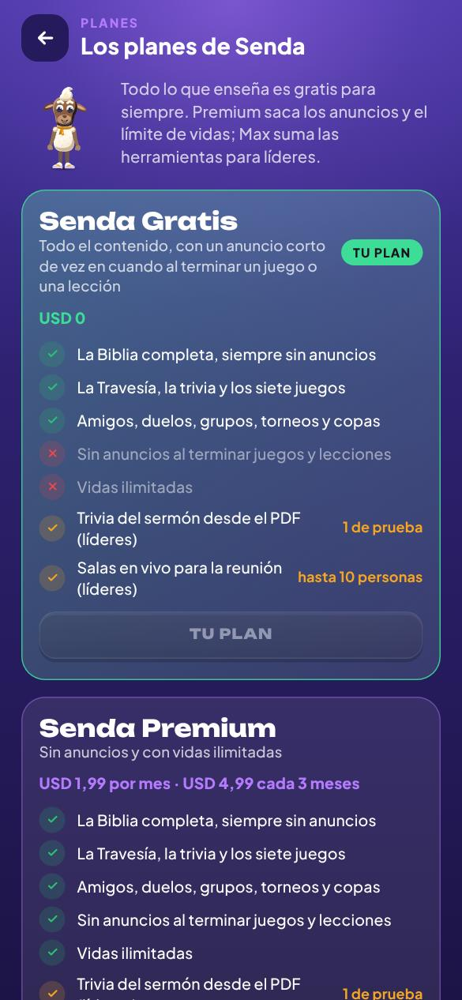
1La pantalla de Planes: los tres con lo que incluye cada uno; tu plan, marcado.
Preguntas
Preguntas frecuentes
¿Necesito un correo para usar Senda?
No. Para leer y jugar solo no hace falta cuenta. Para jugar con otros se crea una cuenta anónima, sin correo ni contraseña.
¿Qué pasa si cambio de teléfono?
Hoy la cuenta anónima queda en el teléfono donde se creó. Está en preparación una forma de pasarla a otro teléfono.
¿Mi alias puede repetirse?
No. Cada alias es único en todo Senda.
¿Qué pasa si cambio de teléfono o reinstalo Senda?
Si guardaste tu progreso con Google (Ajustes → Guardar mi progreso → «Continuar con Google»), en el teléfono nuevo tocas «¿Ya usabas Senda? Recupera tu progreso» en la primera pantalla (o Ajustes → Recuperar mi progreso) y vuelve todo: nivel, Talentos, álbum, Travesía, lo leído, tu alias, tus amigos y tus grupos. Si no lo guardaste, empiezas de cero.
¿Qué ven los demás de mí?
Tu alias, tu avatar, tu nivel y tus logros de juego (si no los ocultas). Lo que lees queda en tu teléfono.
¿Cómo borro mi cuenta?
Ajustes → BORRAR MI CUENTA. Se quitan de la nube tu alias, tus amigos, tus duelos y tus marcas; si lideras un grupo, pasa a otro miembro. Lo que leíste y jugaste en tu teléfono queda ahí.
¿Y si alguien escribe algo ofensivo?
Cada alias, grupo, evento o pregunta se puede denunciar con un toque. Lo revisamos, y si no cumple las normas se quita.